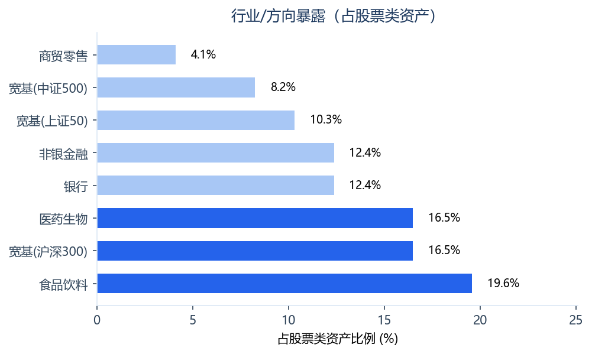
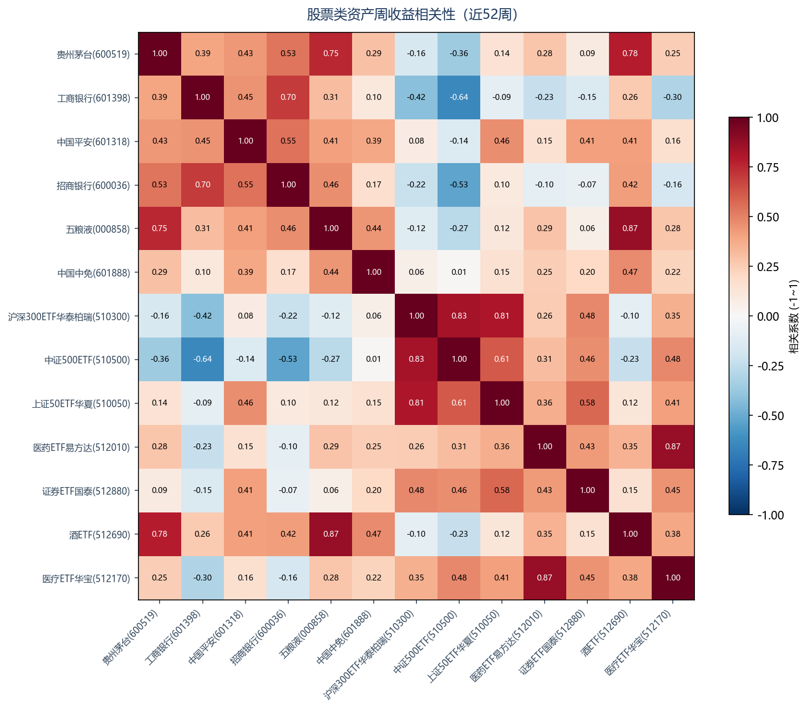

股票持仓深度诊断报告
张先生（58岁 · 稳健型）｜生成日期：2026年08月31日
数据截至 2026-08-28｜腾讯自选股+东方财富妙想(2026-08-30采集)
一、客户与股票持仓概览
总资产
5,265,000 元
张先生 · 58岁 · 稳健型
股票类资产
485,000 元
占总资产 9.21%
直接持股
175,000 元
占股票类 36.08%
股票ETF
310,000 元
占股票类 63.92%
另有场外股票基金 200,000 元，作为背景信息不展开诊断。
二、个股深度诊断（6 只）
评级总览
| 评级 | 数量 | 含义 |
|---|
| 增持 | 4 |
估值/盈利/成长/技术多因子正向，且无重大负面信号 |
| 持有 | 2 |
多因子中性，维持现有仓位 |
| 减持 | 0 |
负向信号主导（高估值/盈利转弱/技术破位等） |
| 清仓 | 0 |
多重重大负面（高估值+盈利恶化 / 高度集中） |
1. 贵州茅台
600519.SH
食品饮料
持有
市场与估值
现价1297.4
PE(TTM)19.92
PB6.46
总市值16,219 亿
股息率(TTM)4.01%
近60日涨跌+4.6%
年初至今-3.8%
52周区间位置38%
占股票类资产8.25%
基本面（2026中报）
ROE(加权)33.5%
营收同比+1.5%
净利同比-2.0%
销售毛利率89.56%
诊断信号
2. 工商银行
601398.SH
银行
增持
市场与估值
现价7.86
PE(TTM)7.54
PB0.72
总市值28,014 亿
股息率(TTM)3.95%
近60日涨跌+8.7%
年初至今+1.3%
52周区间位置80%
占股票类资产6.19%
基本面（2026中报）
ROE(加权)8.64%
营收同比+9.1%
净利同比+4.5%
销售毛利率—（金融业一般不适用）
诊断信号
多方论点
- 估值: 偏低(PB 0.72)
- 技术面: 强势(区间位置80%)
3. 中国平安
601318.SH
非银金融
增持
市场与估值
现价55.85
PE(TTM)6.35
PB0.98
总市值10,113 亿
股息率(TTM)4.83%
近60日涨跌+8.5%
年初至今-16.2%
52周区间位置34%
占股票类资产6.19%
基本面（2026中报）
ROE(加权)18.0%
营收同比+15.0%
净利同比+30.3%
销售毛利率—（金融业一般不适用）
诊断信号
多方论点
- 估值: 偏低(PB 0.98)
- 盈利质量: 优秀(ROE年化18.0%)
- 成长性: 良好(净利+30.3%)
4. 招商银行
600036.SH
银行
增持
市场与估值
现价39.35
PE(TTM)6.58
PB0.9
总市值9,924 亿
股息率(TTM)5.12%
近60日涨跌+6.1%
年初至今-1.8%
52周区间位置66%
占股票类资产6.19%
基本面（2026中报）
ROE(加权)13.42%
营收同比+4.8%
净利同比+2.0%
销售毛利率—（金融业一般不适用）
诊断信号
多方论点
- 估值: 偏低(PB 0.90)
- 盈利质量: 优秀(ROE年化13.4%)
5. 五粮液
000858.SZ
食品饮料
增持
市场与估值
现价71.51
PE(TTM)22.03
PB2.35
总市值2,776 亿
股息率(TTM)7.21%
近60日涨跌-8.9%
年初至今-30.8%
52周区间位置6%
占股票类资产5.15%
基本面（2026中报）
ROE(加权)14.28%
营收同比+20.9%
净利同比+84.3%
销售毛利率80.29%
诊断信号
多方论点
- 估值: 偏低(区间位置6%)
- 盈利质量: 优秀(ROE年化14.3%)
- 成长性: 良好(净利+84.3%)
6. 中国中免
601888.SH
商贸零售
持有
市场与估值
现价53.35
PE(TTM)27.08
PB1.93
总市值1,108 亿
股息率(TTM)1.31%
近60日涨跌-3.2%
年初至今-43.3%
52周区间位置7%
占股票类资产4.12%
基本面（2026中报）
ROE(加权)10.92%
营收同比-1.8%
净利同比+4.7%
销售毛利率33.9%
诊断信号
三、股票ETF持仓诊断（7 只）
| 名称 | 代码 | 跟踪方向 | 现价 | PE | 近60日 | 年初至今 | 占股票类 | 诊断 |
|---|
| 沪深300ETF华泰柏瑞 | 510300.SH | 宽基-沪深300 |
4.679 |
13.84 |
-5.0% |
+1.1% |
16.49% |
持有 |
| 中证500ETF | 510500.SH | 宽基-中证500 |
7.923 |
34.14 |
-4.5% |
+7.4% |
8.25% |
持有 |
| 上证50ETF华夏 | 510050.SH | 宽基-上证50 |
3.037 |
10.99 |
+2.5% |
-2.2% |
10.31% |
持有 |
| 医药ETF易方达 | 512010.SH | 行业-医药生物 |
0.383 |
32.81 |
+17.9% |
+1.3% |
10.31% |
持有 |
| 证券ETF国泰 | 512880.SH | 行业-非银金融 |
1.104 |
13.34 |
+8.0% |
-8.8% |
6.19% |
持有 |
| 酒ETF | 512690.SH | 行业-食品饮料 |
0.423 |
19.83 |
-2.3% |
-21.1% |
6.19% |
关注 |
| 医疗ETF华宝 | 512170.SH | 行业-医药生物 |
0.342 |
30.14 |
+13.6% |
+0.6% |
6.19% |
持有 |
诊断说明
- 沪深300ETF华泰柏瑞（持有）：宽基ETF为组合配置工具，跟踪指数分散风险，建议作为底仓长期持有
- 中证500ETF（持有）：宽基ETF为组合配置工具，跟踪指数分散风险，建议作为底仓长期持有
- 上证50ETF华夏（持有）：宽基ETF为组合配置工具，跟踪指数分散风险，建议作为底仓长期持有
- 医药ETF易方达（持有）：行业ETF处于52周区间中部（位置47%），趋势中性，维持现有仓位
- 证券ETF国泰（持有）：行业ETF处于52周区间中部（位置32%），趋势中性，维持现有仓位
- 酒ETF（关注）：行业ETF当前位于52周区间低位（位置17%），估值折价，可关注逢低分批配置
- 医疗ETF华宝（持有）：行业ETF处于52周区间中部（位置47%），趋势中性，维持现有仓位
四、组合层面诊断
行业/方向集中度

各行业/方向占比均未超过 30.0% 阈值，集中度可控。
个股相关性（近52周周收益）

⚠ 高相关组合（|r| ≥ 0.7，同涨同跌风险）：
- 五粮液(000858) ↔ 酒ETF(512690)：r = 0.87
- 医药ETF易方达(512010) ↔ 医疗ETF华宝(512170)：r = 0.87
- 沪深300ETF华泰柏瑞(510300) ↔ 中证500ETF(510500)：r = 0.83
- 沪深300ETF华泰柏瑞(510300) ↔ 上证50ETF华夏(510050)：r = 0.81
- 贵州茅台(600519) ↔ 酒ETF(512690)：r = 0.78
- 贵州茅台(600519) ↔ 五粮液(000858)：r = 0.75
- 工商银行(601398) ↔ 招商银行(600036)：r = 0.7
风格暴露（市值维度）
大盘88.4%
中小盘11.6%
五、综合诊断与行动建议
个股行动清单
| 股票 | 市值(元) | 占股票类 | 评级 | 建议动作 | 核心理由 |
|---|
| 贵州茅台 |
40,000 |
8.25% |
持有 |
维持现有仓位 |
估值:合理(区间位置38%)；盈利质量:优秀(ROE年化33.5%)；成长性:转负(净利-2.0%)；技术面:震荡(区间位置38%)； |
| 工商银行 |
30,000 |
6.19% |
增持 |
可考虑逢低加仓 |
估值:偏低(PB 0.72)；盈利质量:一般(ROE年化8.6%)；成长性:平稳(净利+4.5%)；技术面:强势(区间位置80%)； |
| 中国平安 |
30,000 |
6.19% |
增持 |
可考虑逢低加仓 |
估值:偏低(PB 0.98)；盈利质量:优秀(ROE年化18.0%)；成长性:良好(净利+30.3%)；技术面:震荡(区间位置34%)； |
| 招商银行 |
30,000 |
6.19% |
增持 |
可考虑逢低加仓 |
估值:偏低(PB 0.90)；盈利质量:优秀(ROE年化13.4%)；成长性:平稳(净利+2.0%)；技术面:震荡(区间位置66%)； |
| 五粮液 |
25,000 |
5.15% |
增持 |
可考虑逢低加仓 |
估值:偏低(区间位置6%)；盈利质量:优秀(ROE年化14.3%)；成长性:良好(净利+84.3%)；技术面:弱势(区间位置6%)； |
| 中国中免 |
20,000 |
4.12% |
持有 |
维持现有仓位 |
估值:偏低(区间位置7%)；盈利质量:一般(ROE年化10.9%)；成长性:平稳(净利+4.7%)；技术面:弱势(区间位置7%)； |
组合调整方向（参考）
- 重复暴露提示（共 7 组高相关，按方向归并，详见第四章相关性矩阵）：
- 食品饮料方向：五粮液、贵州茅台、酒ETF，两两相关性最高 0.87，同涨同跌，合计暴露需合并评估
- 医药生物方向：医疗ETF华宝、医药ETF易方达，两两相关性最高 0.87，同涨同跌，合计暴露需合并评估
- 银行方向：工商银行、招商银行，两两相关性最高 0.7，同涨同跌，合计暴露需合并评估
- 复查建议：建议每季度或重大市场事件后复查一次；个股出现基本面/估值重大变化时随时复审。
六、附录
数据来源与口径
- 行情数据（现价/PE/PB/52周区间/涨跌幅/市值）：腾讯自选股，截至 2026-08-28。
- 财务指标（ROE/营收增速/净利增速/毛利率）：东方财富，最新报告期（2026中报）。
- 诊断范围：直接持股 + 股票ETF；场外股票基金仅作背景展示。
- 估值位置用"价格在52周区间位置"作代理（无PE历史分位序列时），报告中已标注。
评级方法说明
个股评级为透明规则引擎输出：估值(权重30%)、盈利质量(25%)、成长性(25%)、技术面(20%)四因子加权计分，
得分 > 0.15 且无重大负面 → 增持；≤ -0.15 → 减持；≤ -0.35 或负向主导+重大负面 → 清仓；其余 → 持有。
评级阈值为经验参考值，非权威标准。ETF评级基于跟踪方向与52周位置判断。
本报告仅供研究参考，不构成个人投资建议。报告中的评级与建议为基于公开数据的经验性分析，不代表任何收益承诺；市场有风险，投资需谨慎，最终交易决策由客户自主作出。